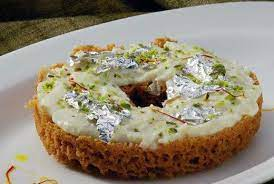

Ghewar

Description
Ghewar is a Rajasthani cuisine disc-shaped sweet made from ghee, flour, and sugar syrup. It is traditionally associated with the month of Shravan and the Teej and Raksha Bandhan festivals. It is a part of Rajasthani tradition and is gifted to newly married daughter on Sinjara, the day preceding Gangaur and Teej. Besides Rajasthan, it is also famous in the adjoining states of Haryana, Delhi, Gujarat, Uttar Pradesh, and Madhya Pradesh. Ghewar is exported to foreign countries too.
Ingredients
- 3 Cups Flour
- 1 cup Ghee
- 3-4 Ice cubes
- 4 cups Water
- 1/2 cup Milk
- 1/4 tsp Food colour
- 1 kg Ghee
- For the Syrup:
- 1/2 cup Sugar
- 1 cup Water
- For topping
- 1 tsp Cardamom
- 1 tbsp Almonds & pistachios
- 1 tbsp Milk(with 1/2 tsp saffron has been rubbed in silver foil)
Steps
- Prepare sugar syrup of 1 thread consistency
- Take solidified ghee in a large wide bowl. Taking one ice cube at a time, rub the ghee vigorously. Take more ice cubes as required, till ghee becomes very white.
- Add milk, flour and a cup of water. Mix to make a smooth batter.
- Dissolve colour in some water and add this to the batter. Add more water if required. Batter should be fairly thin (it should run off easily when poured from a spoon).
- Take an aluminium or steel cylindrical container (do not use lid). The height should be at least 12" and diameter 5-6". Fill the container half with ghee. Heat it.
- When the ghee is smoky hot, take a 50 ml glass full of batter. Pour in centre of ghee, slowly in one continuous threadlike stream. Allow foam to settle. Pour one more glassful in the hole formed in centre.
- When foam settles again, loosen ghewar with an iron skewer inserted in hole. Lift carefully, at a slant, and place on wire mesh to drain. Keep the hot syrup in a wide flat bottomed container to fit in ghevar. Dip ghevar in it, and remove, keep aside on mesh to drain excess syrup.
- Alternatively, pour some syrup evenly all over, keeping ghevar in a mesh placed over a container. Cool a little, top with silver foil.
- Splash a few drops of saffron milk, sprinkle some chopped dry fruit and a few pinches of cardamom powder.
- Serve. One may also serve ghevar with rabri prepared in advance.